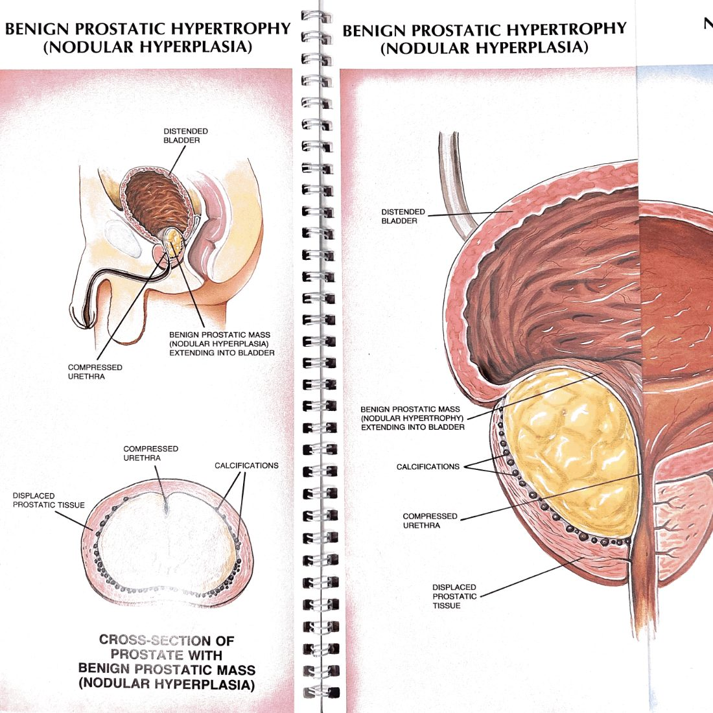
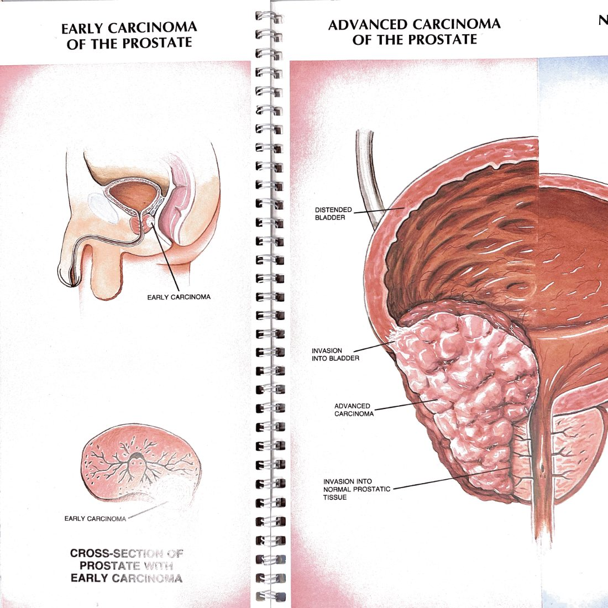
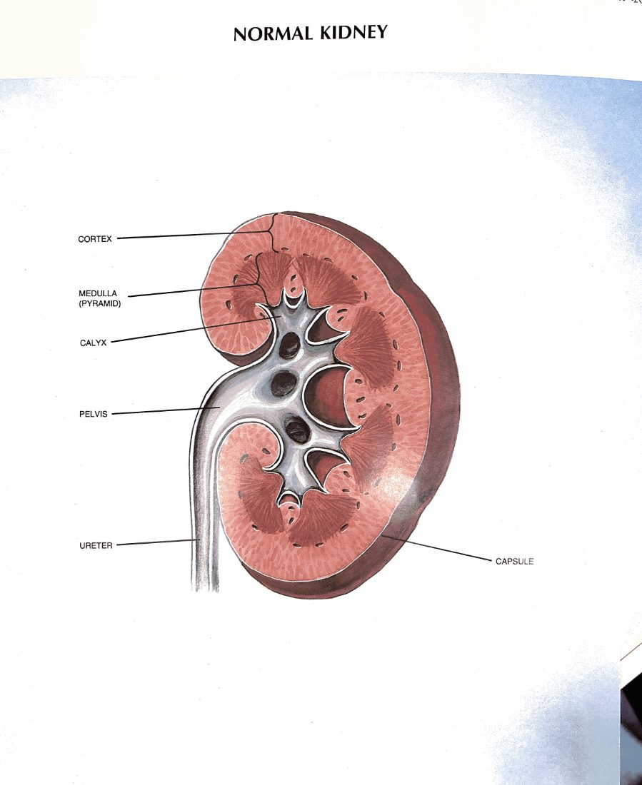

Five operations, each acting on a specific station of the conduit. What the surgeon is doing mechanically, what the post-op course should look like, and the complications that come back to you on the call phone. For PAs, medical students, and clinical clerks.
Every operation has the same shape, and we describe each in that shape. What station does it act on? What does it remove or rearrange? What's the expected day-by-day post-op course? What complications bring the patient back, and which need urology vs. emergency surgery vs. medicine?
The point isn't to make you a surgeon. The point is so that when a post-op patient calls or returns and the chart says "POD3 s/p HoLEP", you have a model in your head of what was just done to that man's prostate, what his urine should look like today, and what would worry the surgeon enough that you should call.
Every urology operation either removes a lesion at a station, reconstructs a conduit segment, or creates a new exit when the existing one cannot work. Hold those three categories and the post-op picture for any operation is roughly predictable from first principles.

A resectoscope passes up the urethra to the prostate. A wire loop carries cutting current and shaves the obstructing adenoma — the inner zone of the prostate — into small chips, which are irrigated out and sent to pathology. The capsule, the verumontanum, and the external sphincter are preserved. Hemostasis is the other half of the operation; bleeding from the prostatic fossa is brisk if not controlled. At the end, a 22 Fr 3-way Foley with CBI sits in the bladder.
Same target — the obstructing adenoma at station 5 — but a different mechanical approach. The holmium laser develops a plane between the adenoma and the surgical capsule (the same plane an open simple prostatectomy uses), the adenoma is enucleated whole into the bladder, and a morcellator inside the bladder breaks it into pieces for removal. The result is more complete removal of adenoma than TURP — including very large glands (>100 g) that previously required open surgery. Hemostasis is excellent because the laser seals as it cuts.
Same target. TURP is faster to teach, faster to perform on smaller glands, ubiquitously available. HoLEP works on any prostate size, gives more complete tissue removal, and has the bleeding profile to handle anticoagulated patients. For glands >80 g, HoLEP (or simple prostatectomy) is the right operation.
A flexible (or semi-rigid) ureteroscope passes up the urethra, through the bladder, into the ureter through the UVJ. The stone is visualized; a holmium laser breaks it into dust or small fragments; a basket retrieves the bigger pieces. A double-J ureteral stent is left in place at the end (in nearly all cases) to ensure drainage through the next 1–14 days while edema resolves. The stent has a loop at the renal pelvis and a loop at the bladder, holding it in.
Every patient who goes home with a stent gets one sentence drilled into them: "You have a plastic tube in your kidney. If you don't come back to have it taken out, you will lose this kidney." The number of patients lost to follow-up after stent placement is non-trivial. Build a tracking system. Confirm the removal appointment exists before they leave.

This is a different operation from TURP/HoLEP. Those leave the prostate behind and just remove the obstructing inner zone. Here, the entire prostate gland is removed, plus the seminal vesicles, plus a margin around the apex and base. The bladder neck is reconstructed and anastomosed directly to the urethra over a Foley. Pelvic lymphadenectomy is performed for staging in many cases. The patient leaves the OR with a urethral Foley sitting through a fresh anastomosis — that catheter is the operation until the anastomosis heals.
A post-prostatectomy patient with a Foley problem in the first 30 days belongs on the operating surgeon's phone. Not a generic urology consult. Not the ED's catheter cart. The surgeon knows what their anastomosis looks like.

The renal hilum is exposed. The renal artery is temporarily clamped (warm ischemia) — the clock starts. The tumor is excised with a small rim of normal parenchyma. The collecting system is closed (if entered). The cortex is reconstructed. The clamp comes off and the kidney reperfuses. The goal: tumor out, collecting system watertight, parenchyma reconstructed, kidney still working.
For small renal masses (<7 cm, T1), partial nephrectomy gives equivalent cancer outcomes to radical nephrectomy and preserves nephrons. Preserved nephrons matter long-term — chronic kidney disease, cardiovascular events, and overall survival are all better. Radical nephrectomy is reserved for tumors where partial is technically impossible or unsafe.
| Operation | Station | What's removed | Catheter duration | Watch for |
|---|---|---|---|---|
| TURP | 5 · prostate | Adenoma chips | 1–2 days | Clot retention, week-2 eschar bleed |
| HoLEP | 5 · prostate | Enucleated adenoma (morcellated) | 1 day | Early SUI, week-2 eschar bleed |
| Ureteroscopy + stent | 2 · ureter | Stone fragments | None (stent only) | Stent intolerance, fever (obstructed infection), forgotten stent |
| RARP | 5 · prostate | Whole prostate + SVs | 7–14 days | Dislodged Foley (call surgeon), anastomotic leak, SUI, rising PSA |
| Partial nephrectomy | 1 · kidney | Tumor + margin | 1–2 days | Urine leak, week-2–3 pseudoaneurysm bleed |
Any new acute finding — bleeding, fever, can't void, can't pass urine, pain disproportionate to expected course, drain output change — belongs on the operating surgeon's phone, not a generic urology consult and not "let's see in the morning." The surgeon knows their reconstruction. You do not yet. Bias toward calling.
May 24, 2026 — for PAs, medical students, and clinical clerks
every operation acts on a station · know which one and you know the post-op picture
← back to reference